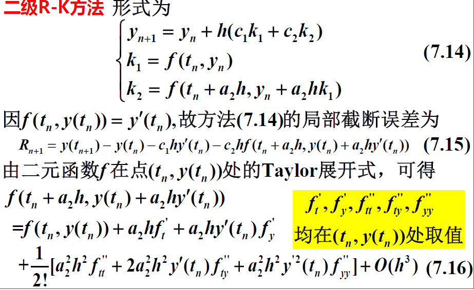
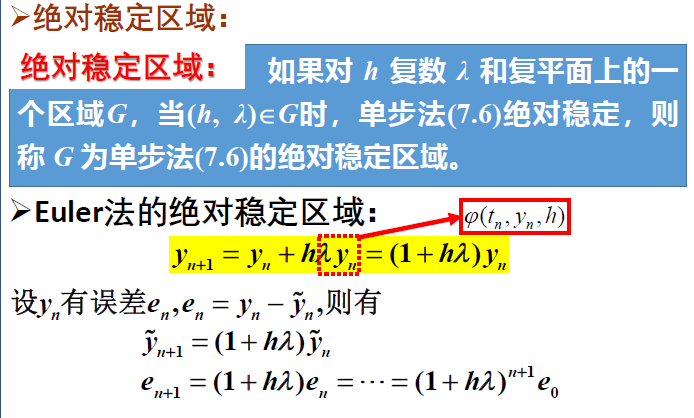

研一课程笔记-数值分析4-6 非线性方程迭代解法 n次方程根的个数与次数相同（实根或者复根）
设有非线性方程
f ( x ) = 0 (4.1) f(x)=0\tag{4.1} f ( x ) = 0 ( 4.1 )
其中 f ( x ) f(x) f ( x ) s s s f ( s ) = 0 f(s)=0 f ( s ) = 0 s s s s s s f ( x ) f(x) f ( x ) f ( x ) f( x) f ( x )
f ( x ) = ( x − s ) m φ ( x ) f(x)=(x-s)^m\varphi(x) f ( x ) = ( x − s ) m φ ( x )
其中 m m m φ ( s ) ≠ 0 \varphi(s)\neq0 φ ( s ) = 0 s s s m m m f ( x ) f(x) f ( x ) m m m m = 1 m=1 m = 1 s s s f ( x ) f(x) f ( x )
二分法 用 C [ a , b ] C[a,b] C [ a , b ] C ( a , b ) C(a,b) C ( a , b ) [ a , b ] [a,b] [ a , b ] ( a , b ) (a,b) ( a , b )
设 f ( x ) ∈ C [ a , b ] f(x)\in C[a,b] f ( x ) ∈ C [ a , b ] f ( a ) f ( b ) < 0 f(a)f(b)<0 f ( a ) f ( b ) < 0 ( a , b ) (a,b) ( a , b ) s s s f ( s ) = 0 f(s)=0 f ( s ) = 0 ( a , b ) (a,b) ( a , b ) s s s f ( s ) = 0 f(s)=0 f ( s ) = 0 s s s
令a 0 = a , b 0 = b a_0=a,b_0=b a 0 = a , b 0 = b
对于k = 0 , 1 , ⋅ ⋅ ⋅ , M k=0,1,\cdotp\cdotp\cdotp,M k = 0 , 1 ,⋅⋅⋅, M
(1)计算 x k = a k + b k 2 x_k=\frac {a_k+b_k}2 x k = 2 a k + b k
(2) 若 b k − a k ⩽ ε b_k-a_k\leqslant\varepsilon b k − a k ⩽ ε ∣ f ( x k ) ∣ ⩽ η |f(x_k)|\leqslant\eta ∣ f ( x k ) ∣ ⩽ η s ≈ x k s\approx x_k s ≈ x k
(3)若 f ( a k ) f ( x k ) < 0 f(a_k)f(x_k)<0 f ( a k ) f ( x k ) < 0 a k + 1 = a k , b k + 1 = x k a_k+1=a_k,b_{k+1}=x_k a k + 1 = a k , b k + 1 = x k f ( a k ) f ( x k ) > 0 f(a_k)f(x_k)>0 f ( a k ) f ( x k ) > 0 a k + 1 = x k , b k + 1 = b k a_k+1=x_k,b_{k+1}=b_k a k + 1 = x k , b k + 1 = b k
(4)若k = M k=M k = M M M M
迭代终止条件 一般通过 ∣ x k + 1 − x k ∣ < ε 1 \begin{vmatrix}x_{k+1}-x_k\end{vmatrix}<\varepsilon_1 ∣ ∣ x k + 1 − x k ∣ ∣ < ε 1 ∣ f ( x ) ∣ < ε 2 \begin{vmatrix}f(x)\end{vmatrix}<\varepsilon_2 ∣ ∣ f ( x ) ∣ ∣ < ε 2
简单迭代法及其收敛性 把 f ( x ) = 0 f(x)=0 f ( x ) = 0
x = φ ( x ) (4.2) x=\varphi(x) \tag{4.2} x = φ ( x ) ( 4.2 )
从而 f ( s ) = 0 f( s) = 0 f ( s ) = 0 s = φ ( s ) s= \varphi ( s) s = φ ( s ) s s s φ ( x ) \varphi(x) φ ( x )
选定s s s x 0 x_0 x 0
x k + 1 = φ ( x k ) ( k = 0 , 1 , ⋅ ⋅ ⋅ ) (4.3) x_{k+1}=\varphi(x_k)\quad(k=0,1,\cdotp\cdotp\cdotp)\tag{4.3} x k + 1 = φ ( x k ) ( k = 0 , 1 ,⋅⋅⋅ ) ( 4.3 )
产生序列 { x k } \left\{x_k\right\} { x k } { x k } \left\{x_k\right\} { x k } s s s { x k } \left\{x_k\right\} { x k } k k k x k x_k x k φ ( x ) \varphi(x) φ ( x )
对于任意的式(4.1)可构成多种简单选代法，它们的迭代函数各不相同。为求同一个根，它们所产生的序列{ x k } \left\{x_k\right\} { x k } φ ( x ) \varphi(x) φ ( x )
大范围收敛性定理 设函数 φ ( x ) ∈ C [ a , b ] \varphi(x)\in C[a,b] φ ( x ) ∈ C [ a , b ] a , b ) a,b) a , b )
当x ∈ [ a , b ] x\in[a,b] x ∈ [ a , b ] φ ( x ) ∈ [ a , b ] ; \varphi(x)\in[a,b]; φ ( x ) ∈ [ a , b ] ; 当 x ∈ ( a , b ) x\in(a,b) x ∈ ( a , b ) ∣ φ ′ ( x ) ∣ ⩽ L < 1 |\varphi^\prime(x)|\leqslant L<1 ∣ φ ′ ( x ) ∣ ⩽ L < 1 L L L 则有如下结论：
方程(4.2)在区间[a,b]上有唯一的根 s s s 对任取的 x 0 ∈ [ a , b ] x_0\in[a,b] x 0 ∈ [ a , b ] { x k } ⊂ [ a , b ] \{x_k\}\subset[a,b] { x k } ⊂ [ a , b ] s s s 成立误差估计式 ∣ s − x k ∣ ⩽ L k 1 − L ∣ x 1 − x 0 ∣ (4.4) \mid s-x_k\mid\leqslant\frac{L^k}{1-L}\mid x_1-x_0\mid \tag{4.4} ∣ s − x k ∣ ⩽ 1 − L L k ∣ x 1 − x 0 ∣ ( 4.4 )
∣ s − x k ∣ ⩽ L 1 − L ∣ x k − x k − 1 ∣ (4.5) \mid s-x_k\mid\leqslant\frac L{1-L}\mid x_k-x_{k-1}\mid \tag{4.5} ∣ s − x k ∣ ⩽ 1 − L L ∣ x k − x k − 1 ∣ ( 4.5 )
1）令 F ( x ) = x − φ ( x ) F(x)=x-\varphi(x) F ( x ) = x − φ ( x ) F ( x ) ∈ C [ a , b ] F(x)\in C[a,b] F ( x ) ∈ C [ a , b ]
F ( a ) = a − φ ( a ) ⩽ 0 , F ( b ) = b − φ ( b ) ⩾ 0 F(a)=a-\varphi(a)\leqslant0,\quad F(b)=b-\varphi(b)\geqslant0 F ( a ) = a − φ ( a ) ⩽ 0 , F ( b ) = b − φ ( b ) ⩾ 0
若上面两个不等式中有一个等号成立，则方程(4.2)有根 s = a s=a s = a s = b s=b s = b s ∈ ( a , b ) s\in(a,b) s ∈ ( a , b ) F ( s ) = s − φ ( s ) = 0 F(s)=s-\varphi(s)=0 F ( s ) = s − φ ( s ) = 0 s ∈ ( a , b ) s\in(a,b) s ∈ ( a , b ) s 1 , s 2 ∈ [ a , b ] s_1,s_2\in[a,b] s 1 , s 2 ∈ [ a , b ] s 1 = φ ( s 1 ) , s 2 = φ ( s 2 ) s_1=\varphi(s_1),s_2=\varphi(s_2) s 1 = φ ( s 1 ) , s 2 = φ ( s 2 )
∣ s 1 − s 2 ∣ = ∣ φ ( s 1 ) − φ ( s 2 ) ∣ = ∣ φ ′ ( ξ ) ∣ ∣ s 1 − s 2 ∣ ⩽ L ∣ s 1 − s 2 ∣ < ∣ s 1 − s 2 ∣ \mid s_1-s_2\mid=\mid\varphi(s_1)-\varphi(s_2)\mid=\mid\varphi^{\prime}(\xi)\mid\mid s_1-s_2\mid\leqslant L\mid s_1-s_2\mid<\mid s_1-s_2\mid ∣ s 1 − s 2 ∣=∣ φ ( s 1 ) − φ ( s 2 ) ∣=∣ φ ′ ( ξ ) ∣∣ s 1 − s 2 ∣ ⩽ L ∣ s 1 − s 2 ∣<∣ s 1 − s 2 ∣
其中 ξ \xi ξ s 1 s_1 s 1 s 2 s_2 s 2 ξ ∈ ( a , b ) \xi\in(a,b) ξ ∈ ( a , b ) s 1 = s 2 s_1=s_2 s 1 = s 2
2）因 x 0 ∈ [ a , b ] x_0\in[a,b] x 0 ∈ [ a , b ] { x k } ⊂ [ a , b ] \{x_k\}\subset[a,b] { x k } ⊂ [ a , b ]
∣ x k − s ∣ = ∣ φ ( x k − 1 ) − φ ( s ) ∣ = ∣ φ ′ ( ξ k ) ∣ ⋅ ∣ x k − 1 − s ∣ ⩽ L ∣ x k − 1 − s ∣ ⩽ ⋅ ⋅ ⋅ ⩽ L k ∣ x 0 − s ∣ \mid x_k-s\mid=\mid\varphi(x_{k-1})-\varphi(s)\mid=\mid\varphi^{\prime}(\xi_k)\mid\cdot\mid x_{k-1}-s\mid\leqslant L\mid x_{k-1}-s\mid\leqslant\cdotp\cdotp\cdotp\leqslant L^k\mid x_0-s\mid ∣ x k − s ∣=∣ φ ( x k − 1 ) − φ ( s ) ∣=∣ φ ′ ( ξ k ) ∣ ⋅ ∣ x k − 1 − s ∣ ⩽ L ∣ x k − 1 − s ∣ ⩽ ⋅⋅⋅ ⩽ L k ∣ x 0 − s ∣
其中 ξ k \xi_k ξ k x k − 1 x_{k-1} x k − 1 s s s ξ k ∈ ( a , b ) \xi_k\in(a,b) ξ k ∈ ( a , b ) ⩽ L < 1 \leqslant L<1 ⩽ L < 1 lim k → ∞ x k = s \lim_{k\to\infty} x_k=s lim k → ∞ x k = s
3）设 m > k m>k m > k
x m − x k = ∑ i = k m − 1 ( x i + 1 − x i ) x_m-x_k=\sum_{i=k}^{m-1}(x_{i+1}-x_i) x m − x k = i = k ∑ m − 1 ( x i + 1 − x i )
而
∣ x i + 1 − x i ∣ = ∣ φ ( x i ) − φ ( x i − 1 ) ∣ ⩽ L ∣ x i − x i − 1 ∣ ⩽ … ⩽ L i ∣ x 1 − x 0 ∣ \begin{aligned}\mid x_{i+1}-x_i\mid&=\mid\varphi(x_i)-\varphi(x_{i-1})\mid\leqslant\\&L\mid x_i-x_{i-1}\mid\leqslant\ldots\leqslant L^i\mid x_1-x_0\mid\end{aligned} ∣ x i + 1 − x i ∣ =∣ φ ( x i ) − φ ( x i − 1 ) ∣ ⩽ L ∣ x i − x i − 1 ∣ ⩽ … ⩽ L i ∣ x 1 − x 0 ∣
于是有：
∣ x m − x k ∣ ⩽ ∑ i = k m − 1 ∣ x i + 1 − x i ∣ ⩽ ∑ i = k m − 1 L i ∣ x 1 − x 0 ∣ = L k 1 − L m − k 1 − L ∣ x 1 − x 0 ∣ \mid x_m-x_k\mid\leqslant\sum_{i=k}^{m-1}\mid x_{i+1}-x_i\mid\leqslant\sum_{i=k}^{m-1}L^i\mid x_1-x_0\mid=L^k\frac{1-L^{m-k}}{1-L}\mid x_1-x_0\mid ∣ x m − x k ∣ ⩽ i = k ∑ m − 1 ∣ x i + 1 − x i ∣ ⩽ i = k ∑ m − 1 L i ∣ x 1 − x 0 ∣= L k 1 − L 1 − L m − k ∣ x 1 − x 0 ∣
x m − x k = x m − x m − 1 + x m − 1 ⋯ − x k x_m-x_k=x_m-x_{m-1}+x_{m-1}\cdots-x_k x m − x k = x m − x m − 1 + x m − 1 ⋯ − x k
然后使用绝对值不等式
令 m → ∞ m\to\infty m → ∞ ⩽ L < 1 \leqslant L<1 ⩽ L < 1
又由
∣ x i + 1 − x i ∣ ⩽ L ∣ x i − x i − 1 ∣ ⩽ ⋯ ⩽ L i − k + 1 ∣ x k − x k − 1 ∣ \mid x_{i+1}-x_i\mid\leqslant L\mid x_i-x_{i-1}\mid\leqslant\cdots\leqslant L^{i-k+1}\mid x_k-x_{k-1}\mid ∣ x i + 1 − x i ∣ ⩽ L ∣ x i − x i − 1 ∣ ⩽ ⋯ ⩽ L i − k + 1 ∣ x k − x k − 1 ∣
得
∣ x m − x k ∣ ⩽ ∑ i = k m − 1 ∣ x i + 1 − x i ∣ ⩽ ∑ i = k m − 1 L i − k + 1 ∣ x k − x k − 1 ∣ = L 1 − L m − k 1 − L ∣ x k − x k − 1 ∣ \mid x_m-x_k\mid\leqslant\sum_{i=k}^{m-1}\mid x_{i+1}-x_i\mid\leqslant\sum_{i=k}^{m-1}L^{i-k+1}\mid x_k-x_{k-1}\mid=L\frac{1-L^{m-k}}{1-L}\mid x_k-x_{k-1}\mid ∣ x m − x k ∣ ⩽ i = k ∑ m − 1 ∣ x i + 1 − x i ∣ ⩽ i = k ∑ m − 1 L i − k + 1 ∣ x k − x k − 1 ∣= L 1 − L 1 − L m − k ∣ x k − x k − 1 ∣
令m → ∞ m\to\infty m → ∞
局部收敛性定理
简单迭代法收敛速度
这里 θ \theta θ lim k → ∞ ∣ φ ′ ( s − θ e k ) ∣ = ∣ φ ′ ( s ) ∣ \lim_{k\to\infty}\mid\varphi^{\prime}(s-\theta e_{k})\mid=\mid\varphi^{\prime}(s)\mid lim k → ∞ ∣ φ ′ ( s − θ e k ) ∣=∣ φ ′ ( s ) ∣ c = ∣ φ ′ ( s ) ∣ c=\mid\varphi^{\prime}(s)\mid c =∣ φ ′ ( s ) ∣
证明中一个非常关键的点是连续性
牛顿法 用简单送代法求方程(4.1)的根 s s s φ ( x ) \varphi(x) φ ( x ) φ ( x ) \varphi(x) φ ( x ) x = s x=s x = s
现在令 φ ( x ) = x + h ( x ) f ( x ) \varphi(x)=x+h(x)f(x) φ ( x ) = x + h ( x ) f ( x ) h ( x ) h(x) h ( x ) h ( s ) ≠ 0 h(s)\neq0 h ( s ) = 0 φ ( x ) = x \varphi(x)=x φ ( x ) = x
x = x + h ( x ) f ( x ) x=x+h(x)f(x) x = x + h ( x ) f ( x )
有共同的根 s s s φ ′ ( s ) = 0 \varphi^{\prime}(s)=0 φ ′ ( s ) = 0 h ( x ) h(x) h ( x ) f ( s ) = 0 f(s)=0 f ( s ) = 0
φ ′ ( s ) = 1 + h ′ ( s ) f ( s ) + h ( s ) f ′ ( s ) = 1 + h ( s ) f ′ ( s ) = 0 \varphi^\prime(s)=1+h^\prime(s)f(s)+h(s)f^\prime(s)=1+h(s)f^\prime(s)=0 φ ′ ( s ) = 1 + h ′ ( s ) f ( s ) + h ( s ) f ′ ( s ) = 1 + h ( s ) f ′ ( s ) = 0
知 h ( x ) h(x) h ( x ) h ( s ) = − 1 f ′ ( s ) h(s)=\frac{-1}{f^{\prime}(s)} h ( s ) = f ′ ( s ) − 1 h ( x ) = − 1 f ′ ( x ) h(x)=-\frac1{f^{\prime}(x)} h ( x ) = − f ′ ( x ) 1 h ( s ) ≠ 0 h(s)\neq0 h ( s ) = 0 φ ( x ) \varphi(x) φ ( x )
φ ( x ) = x − f ( x ) f ′ ( x ) \varphi(x)=x-\frac{f(x)}{f^{\prime}(x)} φ ( x ) = x − f ′ ( x ) f ( x )
它满足 φ ′ ( s ) = 0 \varphi^\prime(s)=0 φ ′ ( s ) = 0
x k + 1 = x k − f ( x k ) f ′ ( x k ) ( k = 0 , 1 , ⋅ ⋅ ⋅ ) (4.7) x_{k+1}=x_k-\frac{f(x_k)}{f^{\prime}(x_k)}\quad(k=0,1,\cdotp\cdotp\cdotp)\tag{4.7} x k + 1 = x k − f ′ ( x k ) f ( x k ) ( k = 0 , 1 ,⋅⋅⋅ ) ( 4.7 )
式(4.7)所表示的迭代法称为 Newton(牛顿)法。
Newton 法可求方程(4.1)的实数根和复数根。当求实数根时，Newton 法有明显的几何意义。当获得 x k x_k x k = f ( x ) =f(x) = f ( x ) ( x k , f ( x k ) ) (x_k,f(x_k)) ( x k , f ( x k )) x x x k + 1 k+1 k + 1 x k − 1 x_{k-1} x k − 1
局部收敛性 定理 4.6 设 s s s f ′ ′ ( x ) f^{\prime\prime}(x) f ′′ ( x ) f ′ ( x ) ≠ 0 f^{\prime}(x)\neq0 f ′ ( x ) = 0 δ > 0 \delta{>}0 δ > 0 x 0 ∈ [ s − δ , s + δ ] x_0\in[s-\delta,s+\delta] x 0 ∈ [ s − δ , s + δ ] { x k } \{x_k\} { x k } s s s f ′ ( s ) ≠ 0 f^{\prime}(s)\neq0 f ′ ( s ) = 0 x 0 ≠ s x_0\neq s x 0 = s { x k } \left\{x_k\right\} { x k }
Newton 法(4.7)的迭代函数 φ ( x ) \varphi(x) φ ( x )
φ ( x ) = x − f ( x ) f ′ ( x ) , φ ′ ( x ) = f ( x ) f ′ ′ ( x ) [ f ′ ( x ) ] 2 \varphi(x)=x-\frac{f(x)}{f^{'}(x)},\quad\varphi^{'}(x)=\frac{f(x)f^{''}(x)}{[f^{'}(x)]^2} φ ( x ) = x − f ′ ( x ) f ( x ) , φ ′ ( x ) = [ f ′ ( x ) ] 2 f ( x ) f ′′ ( x )
因 f ′ ( x ) f^\prime(x) f ′ ( x ) f ′ ( x ) ≠ 0 f^\prime(x)\neq0 f ′ ( x ) = 0 φ ′ ( x ) \varphi^{\prime}(x) φ ′ ( x ) s s s
φ ( s ) = s , φ ′ ( s ) = 0 \varphi(s)=s,\varphi^\prime(s)=0 φ ( s ) = s , φ ′ ( s ) = 0
根据定理 4.2，必存在 δ > 0 \delta>0 δ > 0 x 0 ∈ [ s − δ , s + δ ] x_0\in[s-\delta,s+\delta] x 0 ∈ [ s − δ , s + δ ] { x k } ⊂ [ s − δ , s + δ ] \{x_k\}\subset[s-\delta,s+\delta] { x k } ⊂ [ s − δ , s + δ ] s s s
由 Taylor 公式以及 f ( s ) = 0 f(s)=0 f ( s ) = 0
f ( s ) = f ( x k ) + f ′ ( x k ) ( s − x k ) + f ′ ′ ( ξ k ) 2 ! ( s − x k ) 2 = 0 f(s)=f(x_k)+f^{\prime}(x_k)(s-x_k)+\frac{f^{\prime\prime}(\xi_k)}{2!}(s-x_k)^2=0 f ( s ) = f ( x k ) + f ′ ( x k ) ( s − x k ) + 2 ! f ′′ ( ξ k ) ( s − x k ) 2 = 0
x k + 1 − s = x k − f ( x k ) f ′ ( x k ) − s = f ′ ′ ( ξ k ) 2 f ′ ( x k ) ( s − x k ) 2 x_{k+1}-s=x_k-\frac{f(x_k)}{f^{\prime}(x_k)}-s=\frac{f^{\prime\prime}(\xi_k)}{2f^{\prime}(x_k)}(s-x_k)^2 x k + 1 − s = x k − f ′ ( x k ) f ( x k ) − s = 2 f ′ ( x k ) f ′′ ( ξ k ) ( s − x k ) 2
其中 ξ k \xi_k ξ k x k x_k x k s s s f ′ ( s ) ≠ 0 f^\prime(s)\neq0 f ′ ( s ) = 0 f ′ ( x ) f^{\prime}(x) f ′ ( x ) x ∈ [ s − δ , s + δ ] x\in[s-\delta,s+\delta] x ∈ [ s − δ , s + δ ] f ′ ′ ( x ) ≠ 0 f^{\prime\prime}(x)\neq0 f ′′ ( x ) = 0 x 0 ∈ [ s − δ , s + δ ] x_0\in[s-\delta,s+\delta] x 0 ∈ [ s − δ , s + δ ] x 0 ≠ s x_0\neq s x 0 = s , x k ≠ s ( k = 1 , 2 , . . . ) ,x_k\neq s(k=1,2,...) , x k = s ( k = 1 , 2 , ... )
lim k → ∞ ∣ x k + 1 − s ∣ ∣ x k − s ∣ 2 = ∣ f ′ ′ ( s ) 2 f ′ ( s ) ∣ > 0 \lim_{k\to\infty}\frac{\mid x_{k+1}-s\mid}{\mid x_k-s\mid^2}=\left|\frac{f^{\prime\prime}(s)}{2f^{\prime}(s)}\right|>0 k → ∞ lim ∣ x k − s ∣ 2 ∣ x k + 1 − s ∣ = ∣ ∣ 2 f ′ ( s ) f ′′ ( s ) ∣ ∣ > 0
故序列 { x k } \left\{x_k\right\} { x k }
证毕。
定理 4.6 是 Newton 法的局部收敛性定理。如果 f ( x ) f(x) f ( x ) x 0 x_{0} x 0 s s s δ \delta δ
大范围收敛性（收敛的充分条件 定理 4.7 设函数 f ( x ) f(x) f ( x ) [ a , b ] [a,b] [ a , b ]
f ( a ) f ( b ) < 0 f( a) f( b) {< }0 f ( a ) f ( b ) < 0
f ′ ′ ( x ) f^{\prime\prime}(x) f ′′ ( x ) [ a , b ] [a,b] [ a , b ]
当 x ∈ [ a , b ] x\in[a,b] x ∈ [ a , b ] f ′ ( x ) ≠ 0 ; f^\prime(x)\neq0; f ′ ( x ) = 0 ; f ′ ( x ) ≠ 0 f^\prime(x)\neq0 f ′ ( x ) = 0
x 0 ∈ [ a , b ] , f ( x 0 ) f ′ ′ ( x 0 ) > 0 x_{0}\in [ a, b] , f( x_{0}) f^{\prime \prime }( x_{0}) > 0 x 0 ∈ [ a , b ] , f ( x 0 ) f ′′ ( x 0 ) > 0
则由 Newton 法(4.7)产生的序列{ x k } \{ x_k \} { x k } 单调收敛 于方程(4.1) 在 [ a , b ] [a, b] [ a , b ] s s s
插值与逼近 代数插值 给定 n + 1 n+1 n + 1 x 0 , x 1 , ⋯ , x n x_0, x_1, \cdots , x_n x 0 , x 1 , ⋯ , x n f ( x ) f( x) f ( x ) x 0 , x 1 , ⋯ , x n x_0,x_1,\cdots,x_n x 0 , x 1 , ⋯ , x n [ a , b ] [a,b] [ a , b ]
{ φ k ( x ) ( k = 0 , 1 , ⋯ , n ) } \{\varphi_k(x)(k=0,1,\cdots,n)\} { φ k ( x ) ( k = 0 , 1 , ⋯ , n )}
是次数不高于 n n n { x 0 , x 1 , ⋯ , x n } \left\{x_0,x_1,\cdots,x_n\right\} { x 0 , x 1 , ⋯ , x n }
现在提出如下的问题：在次数不高于 n n n
D n = S p a n { φ 0 , φ 1 , ⋯ , φ n } \mathscr{D}_n=\mathrm{Span}\{\varphi_0,\varphi_1,\cdots,\varphi_n\} D n = Span { φ 0 , φ 1 , ⋯ , φ n }
中寻求多项式
p n ( x ) = ∑ k = 0 n c k φ k ( x ) (5.1) p_n(x)=\sum_{k=0}^nc_k\varphi_k(x)\tag{5.1} p n ( x ) = k = 0 ∑ n c k φ k ( x ) ( 5.1 )
使其满足条件
p n ( x i ) = f ( x i ) ( i = 0 , 1 , ⋯ , n ) (5.2) p_n(x_i)=f(x_i)\quad(i=0,1,\cdots,n)\tag{5.2} p n ( x i ) = f ( x i ) ( i = 0 , 1 , ⋯ , n ) ( 5.2 )
此问题称为一元函数的代数插值问题。x 0 , x 1 , ⋅ ⋅ ⋅ , x n x_0,x_1,\cdotp\cdotp\cdotp,x_n x 0 , x 1 ,⋅⋅⋅, x n f ( x ) f(x) f ( x ) φ k ( x ) ( k = 0 , 1 , ⋯ , n ) \varphi_k(x)(k=0,1,\cdots,n) φ k ( x ) ( k = 0 , 1 , ⋯ , n )
由于插值基函数组 { φ k ( x ) ( k = 0 , 1 , ⋯ , n ) } \{\varphi_k(x)(k=0,1,\cdots,n)\} { φ k ( x ) ( k = 0 , 1 , ⋯ , n )} { x 0 , x 1 , ⋯ , x n } \left\{x_0,x_1,\cdots,x_n\right\} { x 0 , x 1 , ⋯ , x n } n n n p n ( x ) p_n(x) p n ( x )
又由于插值基函数组限定为次数不高于n n n n n n
对于 n + 1 n+1 n + 1 p n ( x i ) = f ( x i ) p_n(x_i)=f(x_i) p n ( x i ) = f ( x i ) n + 1 n+1 n + 1 p ( x i ) = ∑ j = 0 n a j x i j = f ( x i ) p(x_i)=\sum^n_{j=0}a_jx_i^j=f(x_i) p ( x i ) = ∑ j = 0 n a j x i j = f ( x i )
最后可以化为矩阵 X ⋅ A = F X\cdot A=F X ⋅ A = F x i x_i x i a i , f ( x i ) a_i,f(x_i) a i , f ( x i )
拉格朗日插值 取插值基函数
l k ( x ) = ∏ j = 0 , j ≠ k n x − x j x k − x j ( k = 0 , 1 , ⋅ ⋅ ⋅ , n ) (5.3) l_k(x)=\prod_{j=0,j\neq k}^n\frac{x-x_j}{x_k-x_j}\quad(k=0,1,\cdotp\cdotp\cdotp,n) \tag{5.3} l k ( x ) = j = 0 , j = k ∏ n x k − x j x − x j ( k = 0 , 1 ,⋅⋅⋅, n ) ( 5.3 )
显然，l k ( x ) ( k = 0 , 1 , . . . , n ) l_k(x)(k=0,1,...,n) l k ( x ) ( k = 0 , 1 , ... , n ) n n n
l k ( x i ) = { 1 , i = k 0 , i ≠ k l_k(x_i)=\begin{cases}1,&i=k\\0,&i\neq k\end{cases} l k ( x i ) = { 1 , 0 , i = k i = k
显然，通过这种方式得到的 l k ( x i ) l_k(x_i) l k ( x i ) i i i
因此，函数组 { l k ( x ) ( k = 0 , 1 , ⋅ ⋅ ⋅ , n ) } \left\{l_k(x)(k=0,1,\cdotp\cdotp\cdotp,n)\right\} { l k ( x ) ( k = 0 , 1 ,⋅⋅⋅, n ) } { x 0 , x 1 , ⋅ ⋅ ⋅ , x n } \left\{x_0,x_1,\cdotp\cdotp\cdotp,x_n\right\} { x 0 , x 1 ,⋅⋅⋅, x n }
p n ( x ) = ∑ k = 0 n l k ( x ) f ( x k ) (5.4) p_n(x)=\sum_{k=0}^nl_k(x)f(x_k)\tag{5.4} p n ( x ) = k = 0 ∑ n l k ( x ) f ( x k ) ( 5.4 )
由 c i l k ( x i ) = 0 , k ≠ i c_il_k(x_i)=0,k\neq i c i l k ( x i ) = 0 , k = i
p n ( x j ) = ∑ k = 0 n c j l k ( x j ) = c j l j ( x j ) = c j = f ( x j ) p_n(x_j)=\sum_{k=0}^n c_j l_k(x_j)=c_jl_j(x_j)=c_j=f(x_j) p n ( x j ) = ∑ k = 0 n c j l k ( x j ) = c j l j ( x j ) = c j = f ( x j )
或
p n ( x ) = ∑ k = 0 n ( ∏ j = 0 , j ≠ k n x − x j x k − x j ) f ( x k ) (5.5) p_n(x)=\sum_{k=0}^n\Big(\prod_{j=0,j\neq k}^n\frac{x-x_j}{x_k-x_j}\Big)f(x_k)\tag{5.5} p n ( x ) = k = 0 ∑ n ( j = 0 , j = k ∏ n x k − x j x − x j ) f ( x k ) ( 5.5 )
就是满足插值条件(5.2)的 n n n
牛顿插值 拉格朗日插值在计算过程中若需要改变节点或增加节点时， 全部基函数 l k ( x ) l_k(x) l k ( x )
目标是寻找新的基函数，使得每加一个节点时，只附加一项 上去 ，而不必重新计算全部基函数
Newton 插值多项式的构造 基函数如下：
{ φ k ( x ) } = { 1 , x − x 0 , ( x − x 0 ) ( x − x 1 ) , … , ( x − x 0 ) ( x − x 1 ) … ( x − x n − 1 ) } \{\varphi_k(x)\}=\{1,x-x_0,(x-x_0)(x-x_1),\ldots,(x-x_0)(x-x_1)\ldots(x-x_{n-1})\} { φ k ( x )} = { 1 , x − x 0 , ( x − x 0 ) ( x − x 1 ) , … , ( x − x 0 ) ( x − x 1 ) … ( x − x n − 1 )}
( φ 0 ( x 0 ) , φ 1 ( x 0 ) , … , φ n ( x 0 ) φ 0 ( x 1 ) , φ 1 ( x 1 ) , … , φ n ( x 1 ) ⋮ ⋮ ⋮ φ 0 ( x n ) , φ 1 ( x n ) , … , φ n ( x n ) ) = ( 1 0 0 0 1 x 1 − x 0 0 0 1 x 2 − x 0 ( x 2 − x 0 ) ( x 2 − x 1 ) ⋮ ⋮ ⋮ ⋮ 0 1 x n − x 0 ( x n − x 0 ) ( x n − x 1 ) ∏ j = 0 n − 1 ( x n − x j ) ) \begin{pmatrix}\varphi_0(x_0),\varphi_1(x_0),\ldots,\varphi_n(x_0)\\\varphi_0(x_1),\varphi_1(x_1),\ldots,\varphi_n(x_1)\\\vdots&\vdots&\vdots\\\varphi_0(x_n),\varphi_1(x_n),\ldots,\varphi_n(x_n)\end{pmatrix}=\begin{pmatrix}1&0&0&0\\1&x_1-x_0&0&0\\1&x_2-x_0&(x_2-x_0)(x_2-x_1)&\vdots\\\vdots&\vdots&\vdots&0\\\\1&x_n-x_0&(x_n-x_0)(x_n-x_1)&\prod_{j=0}^{n-1}(x_n-x_j)\end{pmatrix} ⎝ ⎛ φ 0 ( x 0 ) , φ 1 ( x 0 ) , … , φ n ( x 0 ) φ 0 ( x 1 ) , φ 1 ( x 1 ) , … , φ n ( x 1 ) ⋮ φ 0 ( x n ) , φ 1 ( x n ) , … , φ n ( x n ) ⋮ ⋮ ⎠ ⎞ = ⎝ ⎛ 1 1 1 ⋮ 1 0 x 1 − x 0 x 2 − x 0 ⋮ x n − x 0 0 0 ( x 2 − x 0 ) ( x 2 − x 1 ) ⋮ ( x n − x 0 ) ( x n − x 1 ) 0 0 ⋮ 0 ∏ j = 0 n − 1 ( x n − x j ) ⎠ ⎞
所以这组函数线性无关，故插值函数为：
p n ( x ) = c 0 + c 1 ( x − x 0 ) + c 2 ( x − x 0 ) ( x − x 1 ) + ⋯ + c n ( x − x 0 ) ( x − x 1 ) ⋯ ( x − x n − 1 ) \begin{aligned}p_{n}(x)&=c_0+c_1(x-x_0)+c_2(x-x_0)(x-x_1)\\&+\cdots+c_n(x-x_0)(x-x_1)\cdots(x-x_{n-1})\end{aligned} p n ( x ) = c 0 + c 1 ( x − x 0 ) + c 2 ( x − x 0 ) ( x − x 1 ) + ⋯ + c n ( x − x 0 ) ( x − x 1 ) ⋯ ( x − x n − 1 )
由p n ( x i ) = f ( x i ) ( i = 0 , 1 , ⋯ , n ) p_n(x_i)=f(x_i)\quad(i=0,1,\cdots,n) p n ( x i ) = f ( x i ) ( i = 0 , 1 , ⋯ , n )
{ f ( x 0 ) = p n ( x 0 ) = c 0 f ( x 1 ) = p n ( x 1 ) = c 0 + c 1 ( x 1 − x 0 ) f ( x 2 ) = p n ( x 2 ) = c 0 + c 1 ( x 2 − x 0 ) + c 2 ( x 2 − x 0 ) ( x 2 − x 1 ) f ( x 3 ) = p n ( x 3 ) = c 0 + c 1 ( x 3 − x 0 ) + c 2 ( x 3 − x 0 ) ( x 3 − x 1 ) f ( x n ) = p n ( x n ) = c 0 + c 1 ( x n − x 0 ) + c 2 ( x n − x 0 ) ( x n − x 1 ) + ⋯ + c n ( x n − x 0 ) ⋯ ( x n − x n − 1 ) \begin{cases}&f(x_0)=p_n(x_0)=c_0\\&f(x_1)=p_n(x_1)=c_0+c_1(x_1-x_0)\\&f(x_2)=p_n(x_2)=c_0+c_1(x_2-x_0)+c_2(x_2-x_0)(x_2-x_1)\\&f(x_3)=p_n(x_3)=c_0+c_1(x_3-x_0)+c_2(x_3-x_0)(x_3-x_1)\\&f(x_n)=p_n(x_n)=c_0+c_1(x_n-x_0)+c_2(x_n-x_0)(x_n-x_1)+\cdots+c_n(x_n-x_0)\cdots(x_n-x_{n-1})\end{cases} ⎩ ⎨ ⎧ f ( x 0 ) = p n ( x 0 ) = c 0 f ( x 1 ) = p n ( x 1 ) = c 0 + c 1 ( x 1 − x 0 ) f ( x 2 ) = p n ( x 2 ) = c 0 + c 1 ( x 2 − x 0 ) + c 2 ( x 2 − x 0 ) ( x 2 − x 1 ) f ( x 3 ) = p n ( x 3 ) = c 0 + c 1 ( x 3 − x 0 ) + c 2 ( x 3 − x 0 ) ( x 3 − x 1 ) f ( x n ) = p n ( x n ) = c 0 + c 1 ( x n − x 0 ) + c 2 ( x n − x 0 ) ( x n − x 1 ) + ⋯ + c n ( x n − x 0 ) ⋯ ( x n − x n − 1 )
可得 c k = f [ x 0 , x 1 , ⋯ , x k ] c_k=f[x_0,x_1,\cdots,x_k] c k = f [ x 0 , x 1 , ⋯ , x k ]
k 阶差商 一阶差商：f [ x 0 , x 1 ] = f ( x 1 ) − f ( x 0 ) x 1 − x 0 f[x_0,x_1]=\frac{f(x_1)-f(x_0)}{x_1-x_0} f [ x 0 , x 1 ] = x 1 − x 0 f ( x 1 ) − f ( x 0 )
二阶差商：f [ x 0 , x 1 , x 2 ] = f [ x 0 , x 2 ] − f [ x 0 , x 1 ] x 2 − x 1 f[x_0,x_1,x_2]=\frac{f[x_0,x_2]-f[x_0,x_1]}{x_2-x_1} f [ x 0 , x 1 , x 2 ] = x 2 − x 1 f [ x 0 , x 2 ] − f [ x 0 , x 1 ]
k阶插商：
f [ x 0 , x 1 , ⋯ , x k ] = f [ x 0 , x 1 , ⋯ , x k − 2 , x k ] − f [ x 0 , x 1 , ⋯ , x k − 1 ] x k − x k − 1 f[x_0,x_1,\cdots,x_k]=\frac{f[x_0,x_1,\cdots,x_{k-2},x_k]-f[x_0,x_1,\cdots,x_{k-1}]}{x_k-x_{k-1}} f [ x 0 , x 1 , ⋯ , x k ] = x k − x k − 1 f [ x 0 , x 1 , ⋯ , x k − 2 , x k ] − f [ x 0 , x 1 , ⋯ , x k − 1 ]
牛顿插值公式利用差商可简单地表为
N 0 ( x ) = f ( x 0 ) N 1 ( x ) = f ( x 0 ) + f [ x 0 , x 1 ] ( x − x 0 ) = N 0 ( x ) + f [ x 0 , x 1 ] ( x − x 0 ) N 2 ( x ) = N 1 ( x ) + f [ x 0 , x 1 , x 2 ] ( x − x 0 ) ( x − x 1 ) . . . . . . N k + 1 ( x ) = N k ( x ) + f [ x 0 , ⋯ , x k + 1 ] ( x − x 0 ) ( x − x 1 ) ⋯ ( x − x k ) ⏟ \begin{aligned} &N_0(x)=f(x_0) \\ &N_1(x)=f(x_0)+f[x_0,x_1](x-x_0) \\ & \quad \quad \quad =N_0(x)+f[x_0,x_1](x-x_0) \\ &N_2(x)=N_1(x)+f[x_0,x_1,x_2](x-x_0)(x-x_1) \\ &...... \\ &N_{k+1}(x)=N_k(x)+\underbrace{f[x_0,\cdots,x_{k+1}](x-x_0)(x-x_1)\cdots(x-x_k)} \end{aligned} N 0 ( x ) = f ( x 0 ) N 1 ( x ) = f ( x 0 ) + f [ x 0 , x 1 ] ( x − x 0 ) = N 0 ( x ) + f [ x 0 , x 1 ] ( x − x 0 ) N 2 ( x ) = N 1 ( x ) + f [ x 0 , x 1 , x 2 ] ( x − x 0 ) ( x − x 1 ) ...... N k + 1 ( x ) = N k ( x ) + f [ x 0 , ⋯ , x k + 1 ] ( x − x 0 ) ( x − x 1 ) ⋯ ( x − x k )
因此, 每增加一个结点， Newton 插值多项式只增加一项（即括号标注的一项）
插值余项 设 x 0 , x 1 , ⋯ , x n x_0, x_1, \cdots , x_n x 0 , x 1 , ⋯ , x n x x x f ( x ) f( x) f ( x ) I x I_x I x n + 1 n+ 1 n + 1
R n ( x ) = f ( x ) − p n ( x ) = f ( n + 1 ) ( ξ ) ( n + 1 ) ! ∏ i = 0 n ( x − x i ) . R_n(x)=f(x)-p_n(x)=\frac{f^{(n+1)}(\xi)}{(n+1)!}\prod_{i=0}^n(x-x_i). R n ( x ) = f ( x ) − p n ( x ) = ( n + 1 )! f ( n + 1 ) ( ξ ) i = 0 ∏ n ( x − x i ) .
罗尔定理的推论：若 φ ( x ) \varphi ( x) φ ( x ) ϕ ( x 1 ) = ⋯ = ϕ ( x n ) = 0 ⇒ \phi ( x_1) = \cdots = \phi ( x_n) = 0\Rightarrow ϕ ( x 1 ) = ⋯ = ϕ ( x n ) = 0 ⇒ n − l n-l n − l ξ ∈ I ~ \xi \in \tilde{I} ξ ∈ I ~ φ ( l ) ( ξ ) = 0 \varphi ^{( l) }( \xi ) = 0 φ ( l ) ( ξ ) = 0
此外，过 n + 1 n +1 n + 1 n n n N n ( x ) ≡ L n ( x ) N_n(x)\equiv L_n(x) N n ( x ) ≡ L n ( x )
R n ( x ) R_n(x) R n ( x ) n + 1 n+1 n + 1 x 0 x_0 x 0 x n x_n x n
证明：
由于 R n ( x i ) = 0 R_n( x_i) = 0 R n ( x i ) = 0 i = 0 , 1 , . . . , n \boldsymbol{i}= 0, 1, . . . , n i = 0 , 1 , ... , n ⇒ \Rightarrow ⇒ R n ( x ) = u ( x ) ∏ i = 0 ( x − x i ) = f ( x ) − p n ( x ) R_{n}(x)=u(x)\prod_{i=0}(x-x_{i})=f(x)-p_{n}(x) R n ( x ) = u ( x ) ∏ i = 0 ( x − x i ) = f ( x ) − p n ( x )
任意固定x ≠ x i x\neq x_i x = x i ( i = 0 , . . . , n ) ( i= 0, . . . , n) ( i = 0 , ... , n )
g ( t ) = R n ( t ) − u ( x ) ∏ i = 0 n ( t − x i ) = f ( t ) − p n ( t ) − u ( x ) ∏ i = 0 n ( t − x i ) (1) g(t)=R_n(t)-u(x)\prod_{i=0}^n(t-x_i)=f(t)-p_n(t)-u(x)\prod_{i=0}^n(t-x_i)\tag{1} g ( t ) = R n ( t ) − u ( x ) i = 0 ∏ n ( t − x i ) = f ( t ) − p n ( t ) − u ( x ) i = 0 ∏ n ( t − x i ) ( 1 )
则 g ( t ) g( t) g ( t ) n + 2 n+ 2 n + 2 x , x 0 , … , x n x, x_0, \ldots , x_n x , x 0 , … , x n ξ ∈ I ~ x \xi\in\tilde{I}_x ξ ∈ I ~ x
g ( n + 1 ) ( ξ ) = 0 , ξ ∈ I ~ x g^{(n+1)}(\xi)=0,\xi\in\tilde{I}_{x} g ( n + 1 ) ( ξ ) = 0 , ξ ∈ I ~ x
⇒ u ( x ) = f ( n + 1 ) ( ξ ) ( n + 1 ) ! ⇒ R n ( x ) = f ( n + 1 ) ( ξ ) ( n + 1 ) ! ∏ i = 0 n ( x − x i ) . (2) \Rightarrow u(x)=\frac{f^{(n+1)}(\xi)}{(n+1)!}\Rightarrow R_n(x)=\frac{f^{(n+1)}(\xi)}{(n+1)!}\prod_{i=0}^n(x-x_i).\tag{2} ⇒ u ( x ) = ( n + 1 )! f ( n + 1 ) ( ξ ) ⇒ R n ( x ) = ( n + 1 )! f ( n + 1 ) ( ξ ) i = 0 ∏ n ( x − x i ) . ( 2 )
显然 ξ \xi ξ x x x
对 (1) 式求导，由于 p n ( t ) p_n(t) p n ( t ) n n n p n ( n + 1 ) ( t ) = 0 p_n^{(n+1)}(t)=0 p n ( n + 1 ) ( t ) = 0 [ u ( x ) ∏ i = 0 n ( t − x i ) ] ( n + 1 ) = u ( x ) ( n + 1 ) ! [u(x)\prod_{i=0}^n(t-x_i)]^{(n+1)}=u(x)(n+1)! [ u ( x ) ∏ i = 0 n ( t − x i ) ] ( n + 1 ) = u ( x ) ( n + 1 )!
g ( n + 1 ) ( t ) = f ( n + 1 ) ( t ) − u ( x ) ( n + 1 ) ! g^{(n+1)}(t)=f^{(n+1)}(t)-u(x)(n+1)! g ( n + 1 ) ( t ) = f ( n + 1 ) ( t ) − u ( x ) ( n + 1 )!
即可得到 (2) 式
正交多项式 权函数 定义 权函数 在区间(a , b ) a,b) a , b ) ρ ( x ) \rho ( x) ρ ( x )
对一切整数n ≥ 0 , ∫ a b x n ρ ( x ) d x n\geq0,\int_a^bx^n\rho(x)dx n ≥ 0 , ∫ a b x n ρ ( x ) d x
对 ( a , b ) ( a, b) ( a , b ) f ( x ) f( x) f ( x ) ∫ a b ρ ( x ) f ( x ) d x = 0 \int _{a}^{b}\rho ( x) f( x) dx= 0 ∫ a b ρ ( x ) f ( x ) d x = 0 ( a , b ) ( a, b) ( a , b ) f ( x ) ≡ 0. f( x) \equiv 0. f ( x ) ≡ 0.
那么，称 ρ ( x ) \rho(x) ρ ( x ) ( a , b ) (a,b) ( a , b )
常见的权函数：ρ ( x ) ≡ 1 , a ≤ x ≤ b ; \rho ( x) \equiv 1, a\leq x\leq b; ρ ( x ) ≡ 1 , a ≤ x ≤ b ;
内积 给定 f ( x ) , g ( x ) ∈ C [ a , b ] , ρ ( x ) f( x) , g( x) \in C[ a, b] , \rho ( x) f ( x ) , g ( x ) ∈ C [ a , b ] , ρ ( x ) ( a , b ) (a,b) ( a , b )
( f , g ) = ∫ a b ρ ( x ) f ( x ) g ( x ) d x (f,g)=\int_a^b\rho(x)f(x)g(x)dx ( f , g ) = ∫ a b ρ ( x ) f ( x ) g ( x ) d x
为 f f f g g g [ a , b ] [a,b] [ a , b ]
内积的性质 ( f , g ) = ( g , f ) ; \left(f,\:g\right)=\left(\:g,\:f\right); ( f , g ) = ( g , f ) ;
( k f , g ) = ( f , k g ) = k ( f , g ) , k (kf,g)=(f,kg)=k(f,g),k ( k f , g ) = ( f , k g ) = k ( f , g ) , k k ∈ R ; k\in R; k ∈ R ;
( f 1 + f 2 , g ) = ( f 1 , g ) + ( f 2 , g ) ; \left(f_{1}+f_{2},\:g\right)=\left(f_{1},g\:\right)+\left(f_{2},g\:\right); ( f 1 + f 2 , g ) = ( f 1 , g ) + ( f 2 , g ) ;
若在 [ a , b ] [a,b] [ a , b ] f ( x ) ≢ 0 f(x)\not\equiv0 f ( x ) ≡ 0 ( f , f ) > 0. (f,f)>0. ( f , f ) > 0.
正交与正交函数系 若内积
( f , g ) = ∫ a b ρ ( x ) f ( x ) g ( x ) d x = 0 (f,g)=\int_a^b\rho(x)f(x)g(x)dx=0 ( f , g ) = ∫ a b ρ ( x ) f ( x ) g ( x ) d x = 0
则称 f f f [ a , b ] [a,b] [ a , b ] ρ ( x ) \rho(x) ρ ( x )
正交函数系 定义 若函数系 { φ 0 ( x ) , φ 1 ( x ) , . . . , φ n ( x ) , . . . } \{\varphi_0(x),\varphi_1(x),...,\varphi_n(x),...\} { φ 0 ( x ) , φ 1 ( x ) , ... , φ n ( x ) , ... }
( φ i , φ j ) = ∫ a b ρ ( x ) φ i ( x ) φ j ( x ) d x = { 0 , i ≠ j a i > 0 , i = j (\varphi_i,\varphi_j)=\int_a^b\rho(x)\varphi_i(x)\varphi_j(x)dx=\begin{cases}0, i\neq j\\a_i>0,i=j\end{cases} ( φ i , φ j ) = ∫ a b ρ ( x ) φ i ( x ) φ j ( x ) d x = { 0 , i = j a i > 0 , i = j
则称 { φ n ( x ) } \{\varphi_n(x)\} { φ n ( x )} [ a , b ] [a,b] [ a , b ] ρ ( x ) \rho(x) ρ ( x )
[ a , b ] [a,b] [ a , b ] ρ ( x ) \rho(x) ρ ( x ) ρ ( x ) \rho(x) ρ ( x )
这里函数系线性无关与前面插值里的线性无关不是一个概念 设 φ k ( x ) \varphi_k(x) φ k ( x ) k k k k = 0 , 1 , 2 , … ; k=0,1,2,\ldots; k = 0 , 1 , 2 , … ; { φ k ( x ) } \{\boldsymbol{\varphi}_k(x)\} { φ k ( x )} [ a , b ] [a,b] [ a , b ] ρ ( x ) \rho(x) ρ ( x )
⇔ \Leftrightarrow ⇔
对任何次数不高于 k − 1 k-1 k − 1 q ( x ) q(x) q ( x )
( q , φ k ) = ∫ a ρ ( x ) q ( x ) φ k ( x ) d x = 0 , k = 1 , 2 , ⋯ . (q,\varphi_k)=\int_a\rho(x)q(x)\varphi_k(x)dx=0,k=1,2,\cdots. ( q , φ k ) = ∫ a ρ ( x ) q ( x ) φ k ( x ) d x = 0 , k = 1 , 2 , ⋯ .
性质 (结构)设 { φ k ( x ) } \{\varphi_k(x)\} { φ k ( x )} [ a , b ] [a,b] [ a , b ] ρ ( x ) \rho(x) ρ ( x ) { c k φ k ( x ) } \left\{c_k\varphi_k(x)\right\} { c k φ k ( x ) } [ a , b ] [a,b] [ a , b ] ρ ( x ) \rho(x) ρ ( x ) c k c_k c k
(唯一性){φ k ( x ) } \varphi_k(x)\} φ k ( x )} [ a , b ] [a,b] [ a , b ] ρ ( x ) \rho(x) ρ ( x ) φ k ( x ) \varphi_k(x) φ k ( x ) { φ k ( x ) } \{\varphi_k(x)\} { φ k ( x )} { φ k ( x ) } , { g k ( x ) } \{\varphi_k(x)\},\{g_k(x)\} { φ k ( x )} , { g k ( x )} k = 0 k=0 k = 0 φ 0 ( x ) ≡ 1 ≡ g 0 ( x ) . \varphi_0(x)\equiv1\equiv g_0(x). φ 0 ( x ) ≡ 1 ≡ g 0 ( x ) . k ≥ 1 k\geq 1 k ≥ 1 g k − φ k g_k- \varphi _k g k − φ k k − 1 k- 1 k − 1
( g k − φ k , φ k ) = ( g k − φ k , g k ) = 0 ⇔ ( g k − φ k , g k − φ k ) = 0 , ⇔ g k − φ k ≡ 0 , g k ( x ) ≡ φ k ( x ) , a ≤ x ≤ b \begin{aligned}&(\:g_k-\varphi_k,\:\varphi_k\:)=(\:g_k-\varphi_k,\:g_k\:)=0\\&\Leftrightarrow(g_k-\varphi_k,g_k-\varphi_k)=0,\\&\Leftrightarrow g_k-\varphi_k\equiv0,\quad g_k(x)\equiv\varphi_k(x)_,a\leq x\leq b\end{aligned} ( g k − φ k , φ k ) = ( g k − φ k , g k ) = 0 ⇔ ( g k − φ k , g k − φ k ) = 0 , ⇔ g k − φ k ≡ 0 , g k ( x ) ≡ φ k ( x ) , a ≤ x ≤ b
(正交多项式的根)若 φ k ( x ) {\varphi_k(x)} φ k ( x ) [ a , b ] [a,b] [ a , b ] ρ ( x ) \rho(x) ρ ( x ) k ≥ 1 k\geq1 k ≥ 1 k k k φ k ( x ) \varphi_k(x) φ k ( x ) ( a , b ) (a,b) ( a , b ) k k k
事实上，可以证明 k k k k k k
设{φ k ( x ) } \varphi_k(x)\} φ k ( x )} [ a , b ] [a,b] [ a , b ] ρ ( x ) \rho(x) ρ ( x ) k ≥ 1 k\geq1 k ≥ 1
ϕ k + 1 ( x ) = a k + 1 a k ( x − β k ) ϕ k ( x ) − a k + 1 a k − 1 a k 2 λ k − 1 ϕ k − 1 ( x ) \phi_{k+1}(x)=\frac{a_{k+1}}{a_k}(x-\beta_k)\phi_k(x)-\frac{a_{k+1}a_{k-1}}{a_k^2}\lambda_{k-1}\phi_{k-1}(x) ϕ k + 1 ( x ) = a k a k + 1 ( x − β k ) ϕ k ( x ) − a k 2 a k + 1 a k − 1 λ k − 1 ϕ k − 1 ( x )
其中，a k a_k a k φ k ( x ) \varphi_k(x) φ k ( x )
β k = ( x φ k , φ k ) ( φ k , φ k ) , λ k − 1 = ( φ k , φ k ) ( φ k − 1 , φ k − 1 ) . \beta_{k}=\frac{(x\varphi_{k},\varphi_{k})}{(\varphi_{k},\varphi_{k})},\quad\lambda_{k-1}=\frac{(\varphi_{k},\varphi_{k})}{(\varphi_{k-1},\varphi_{k-1})}. β k = ( φ k , φ k ) ( x φ k , φ k ) , λ k − 1 = ( φ k − 1 , φ k − 1 ) ( φ k , φ k ) .
函数的最佳平方逼近 函数的最佳逼近问题：对函数类 A A A f ( x ) f( x) f ( x ) B B B ( B ∈ A ) ( B\in A) ( B ∈ A ) P ( x ) P( x) P ( x ) P ( x ) P(x) P ( x ) f ( x ) f (x) f ( x )
函数f ( x ) f(x) f ( x ) P ( x ) P( x) P ( x )
函数类 A A A [ a , b ] [a,b] [ a , b ] C [ a , b ] C[a,b] C [ a , b ] B B B
常用度量标准 一致逼近(均匀逼近)以 max a ≤ x ≤ b ∣ f ( x ) − p ( x ) ∣ \max _a\leq x\leq b| f( x) - p( x) | max a ≤ x ≤ b ∣ f ( x ) − p ( x ) ∣ f ( x ) − P ( x ) f(x)-P( x) f ( x ) − P ( x )
平方逼近(均方逼近)以 ∫ a b [ f ( x ) − p ( x ) ] 2 d x \int_a^b[f(x)-p(x)]^2dx ∫ a b [ f ( x ) − p ( x ) ] 2 d x f ( x ) − P ( x ) f(x)-P( x) f ( x ) − P ( x )
最佳平方逼近的概念与解法
H n = Span { φ 0 ( x ) , φ 1 ( x ) , . . . , φ n ( x ) } H_n= \operatorname { Span} \{ \varphi _0( x) , \varphi _1( x) , . . . , \varphi _n( x) \} H n = Span { φ 0 ( x ) , φ 1 ( x ) , ... , φ n ( x )} φ i ( x ) \varphi_i(x) φ i ( x )
定理5.7 设f ( x ) ∈ C [ a , b ] , p ∗ ( x ) ∈ H n f(x)\in C[a,b],p^*(x)\in H_n f ( x ) ∈ C [ a , b ] , p ∗ ( x ) ∈ H n H n H_n H n p ∗ ( x ) p^* ( x) p ∗ ( x ) f ( x ) f( x) f ( x ) ⇔ ( f − p ∗ , φ j ) = 0 , j = 0 , 1 , . . . , n \Leftrightarrow(f-p^*,\varphi_j)=0,j=0,1,...,n ⇔ ( f − p ∗ , φ j ) = 0 , j = 0 , 1 , ... , n { φ 0 ( x ) , φ 1 ( x ) , . . . , φ n ( x ) } \{ \varphi _0( x) , \varphi _1( x) , . . . , \varphi _n( x) \} { φ 0 ( x ) , φ 1 ( x ) , ... , φ n ( x )} H n H_n H n
( ⇒ ) ( \Rightarrow ) ( ⇒ ) p ∗ ( x ) = ∑ c i ∗ φ i ( x ) p^*(x)=\sum c_i^*\varphi _i(x) p ∗ ( x ) = ∑ c i ∗ φ i ( x ) ( f − p ∗ , φ j ) = 0 (f-p^*,\varphi_j)=0 ( f − p ∗ , φ j ) = 0 ( f − ∑ c i ∗ φ i , φ j ) = 0 (f-\sum c_i^*\varphi _i,\varphi_j)=0 ( f − ∑ c i ∗ φ i , φ j ) = 0
则 ( f , φ j ) = ( ∑ c i ∗ φ i , φ j ) = ∑ c i ∗ ( φ i , φ j ) (f,\varphi_j)=(\sum c_i^*\varphi _i,\varphi_j)=\sum c_i^*(\varphi_i,\varphi_j) ( f , φ j ) = ( ∑ c i ∗ φ i , φ j ) = ∑ c i ∗ ( φ i , φ j )
即：
[ ( φ 0 , φ 0 ) ( φ 0 , φ 1 ) ⋯ ( φ 0 , φ n ) ( φ 1 , φ 0 ) ( φ 1 , φ 1 ) ⋯ ( φ 1 , φ n ) ⋮ ⋮ ⋯ ⋮ ( φ n , φ 0 ) ( φ n , φ 1 ) ⋯ ( φ n , φ n ) ] [ c 0 ∗ c 1 ∗ ⋮ c n ∗ ] = [ ( f , φ 0 ) ( f , φ 1 ) ⋮ ( f , φ n ) ] \begin{bmatrix}(\varphi_0,\varphi_0)&(\varphi_0,\varphi_1)&\cdots&(\varphi_0,\varphi_n)\\(\varphi_1,\varphi_0)&(\varphi_1,\varphi_1)&\cdots&(\varphi_1,\varphi_n)\\\vdots&\vdots&\cdots&\vdots\\(\varphi_n,\varphi_0)&(\varphi_n,\varphi_1)&\cdots&(\varphi_n,\varphi_n)\end{bmatrix}\begin{bmatrix}c_0^*\\c_1^*\\\vdots\\c_n^*\end{bmatrix}=\begin{bmatrix}(f,\varphi_0)\\(f,\varphi_1)\\\vdots\\(f,\varphi_n)\end{bmatrix} ⎣ ⎡ ( φ 0 , φ 0 ) ( φ 1 , φ 0 ) ⋮ ( φ n , φ 0 ) ( φ 0 , φ 1 ) ( φ 1 , φ 1 ) ⋮ ( φ n , φ 1 ) ⋯ ⋯ ⋯ ⋯ ( φ 0 , φ n ) ( φ 1 , φ n ) ⋮ ( φ n , φ n ) ⎦ ⎤ ⎣ ⎡ c 0 ∗ c 1 ∗ ⋮ c n ∗ ⎦ ⎤ = ⎣ ⎡ ( f , φ 0 ) ( f , φ 1 ) ⋮ ( f , φ n ) ⎦ ⎤
从而求解系数 c i ∗ c_i^* c i ∗
( ⇐ ) ( \Leftarrow ) ( ⇐ ) ( f − p ∗ , φ j ) = 0 , j = 0 , 1 , . . . , n ( f- p^*, \varphi _j) = 0, j= 0, 1, . . . , n ( f − p ∗ , φ j ) = 0 , j = 0 , 1 , ... , n p ( x ) ∈ H n p( x) \in H_n p ( x ) ∈ H n
( f − p , f − p ) = ( f − p ∗ + p ∗ − p , f − p ∗ + p ∗ − p ) = ( f − p ∗ , f − p ∗ ) + 2 ( f − p ∗ , p ∗ − p ) + ( p ∗ − p , p ∗ − p ) \begin{aligned}(f-p,f-p)&=(f-p^*+p^*-p,f-p^*+p^*-p)\\&=(f-p^*,f-p^*)+2(f-p^*,p^*-p)+(p^*-p,p^*-p)\end{aligned} ( f − p , f − p ) = ( f − p ∗ + p ∗ − p , f − p ∗ + p ∗ − p ) = ( f − p ∗ , f − p ∗ ) + 2 ( f − p ∗ , p ∗ − p ) + ( p ∗ − p , p ∗ − p )
由于 ( f − p ∗ , p ∗ − p ) = ∑ j = 0 n ( c j ∗ − c j ) ( f − p ∗ , φ j ) = 0 \left ( f- p^* , p^* - p\right ) = \sum _{j= 0}^n\left ( c_j^* - c_j\right ) \left ( f- p^* , \varphi _j\right ) = 0 ( f − p ∗ , p ∗ − p ) = ∑ j = 0 n ( c j ∗ − c j ) ( f − p ∗ , φ j ) = 0 ( p ∗ − p , p ∗ − p ) ≥ 0 ( p^* - p, p^* - p) \geq 0 ( p ∗ − p , p ∗ − p ) ≥ 0 ( f − p , f − p ) ≥ ( f − p ∗ , f − p ∗ ) . (f-p,f-p)\geq(f-p^*,f-p^*). ( f − p , f − p ) ≥ ( f − p ∗ , f − p ∗ ) .
p ∗ p^* p ∗ H n H_n H n f f f
即设 f ( x ) ∈ C [ a , b ] , p ∗ ( x ) ∈ H n f(x)\in C[a,b],p^*(x)\in H_n f ( x ) ∈ C [ a , b ] , p ∗ ( x ) ∈ H n H n H_n H n p ∗ ( x ) p^* ( x) p ∗ ( x ) f ( x ) f( x) f ( x ) ⇔ \Leftrightarrow ⇔ p ( x ) ∈ H n p( x) \in H_n p ( x ) ∈ H n
( f − p ∗ , p ) = 0 (f-p^*,p)=0 ( f − p ∗ , p ) = 0
定理5.8 设 f ( x ) ∈ C [ a , b ] f( x) \in C[ a, b] f ( x ) ∈ C [ a , b ] H n H_n H n f ( x ) f( x) f ( x )
最佳平方逼近的求解 $$ (f,g)=\int_a^b\rho(x)f(x)g(x)dx $$ 一般来说权函数默认 $\rho(x)=1$正交函数系在最佳平方逼近中的应用 对于正交函数系，( φ k , φ j ) = ∫ ρ ( x ) φ k ( x ) φ j ( x ) d x = 0 , k ≠ j (\varphi_{k},\varphi_{j})=\int\rho(x)\varphi_{k}(x)\varphi_{j}(x)dx=0,k\neq j ( φ k , φ j ) = ∫ ρ ( x ) φ k ( x ) φ j ( x ) d x = 0 , k = j
[ ( φ 0 , φ 0 ) ( φ 0 , φ 1 ) ⋯ ( φ 0 , φ n ) ( φ 1 , φ 0 ) ( φ 1 , φ 1 ) ⋯ ( φ 1 , φ n ) ⋮ ⋮ ⋯ ⋮ ( φ n , φ 0 ) ( φ n , φ 1 ) ⋯ ( φ n , φ n ) ] [ c 0 c 1 ⋮ c n ] = [ ( f , φ 0 ) ( f , φ 1 ) ⋮ ( f , φ n ) ] \begin{bmatrix}(\varphi_0,\varphi_0)&(\varphi_0,\varphi_1)&\cdots&(\varphi_0,\varphi_n)\\(\varphi_1,\varphi_0)&(\varphi_1,\varphi_1)&\cdots&(\varphi_1,\varphi_n)\\\vdots&\vdots&\cdots&\vdots\\(\varphi_n,\varphi_0)&(\varphi_n,\varphi_1)&\cdots&(\varphi_n,\varphi_n)\end{bmatrix}\begin{bmatrix}c_0\\c_1\\\vdots\\c_n\end{bmatrix}=\begin{bmatrix}(f,\varphi_0)\\(f,\varphi_1)\\\vdots\\(f,\varphi_n)\end{bmatrix} ⎣ ⎡ ( φ 0 , φ 0 ) ( φ 1 , φ 0 ) ⋮ ( φ n , φ 0 ) ( φ 0 , φ 1 ) ( φ 1 , φ 1 ) ⋮ ( φ n , φ 1 ) ⋯ ⋯ ⋯ ⋯ ( φ 0 , φ n ) ( φ 1 , φ n ) ⋮ ( φ n , φ n ) ⎦ ⎤ ⎣ ⎡ c 0 c 1 ⋮ c n ⎦ ⎤ = ⎣ ⎡ ( f , φ 0 ) ( f , φ 1 ) ⋮ ( f , φ n ) ⎦ ⎤
⇒ [ ( φ 0 , φ 0 ) ( φ 1 , φ 1 ) ⋱ ( φ n , φ n ) ] [ c 0 c 1 ⋮ c n ] = [ ( f , φ 0 ) ( f , φ 1 ) ⋮ ( f , φ n ) ] \Rightarrow\begin{bmatrix}(\varphi_0,\varphi_0)\\&(\varphi_1,\varphi_1)\\&&\ddots\\&&&(\varphi_n,\varphi_n)\end{bmatrix}\begin{bmatrix}c_0\\c_1\\\vdots\\c_n\end{bmatrix}=\begin{bmatrix}(f,\varphi_0)\\(f,\varphi_1)\\\vdots\\(f,\varphi_n)\end{bmatrix} ⇒ ⎣ ⎡ ( φ 0 , φ 0 ) ( φ 1 , φ 1 ) ⋱ ( φ n , φ n ) ⎦ ⎤ ⎣ ⎡ c 0 c 1 ⋮ c n ⎦ ⎤ = ⎣ ⎡ ( f , φ 0 ) ( f , φ 1 ) ⋮ ( f , φ n ) ⎦ ⎤
⇒ c k = ( f , φ k ) ( φ k , φ k ) , k = 0 , 1 , 2 , . . . , n \Rightarrow c_k=\frac{(f,\varphi_k)}{(\varphi_k,\varphi_k)},\quad k=0,1,2,...,n ⇒ c k = ( φ k , φ k ) ( f , φ k ) , k = 0 , 1 , 2 , ... , n
曲线拟合 与插值的一个非常大的区别就是曲线拟合的函数 y ∗ ( x ) y^*(x) y ∗ ( x )
最小二乘问题 最小二乘问题的矩阵表示 最小二乘解的特征 最小二乘法的精度 正交多项式用于曲线拟合 数值积分 目的是求一些牛顿-莱布尼茨积分公式无法求解的积分函数
求积公式及其代数精度 求积公式的一般形式：
∫ a b f ( x ) d x ≈ ∑ k = 0 n λ k f ( x k ) (6.1) \int_a^bf(x)dx\approx\sum_{k=0}^n\lambda_kf(x_k)\tag{6.1} ∫ a b f ( x ) d x ≈ k = 0 ∑ n λ k f ( x k ) ( 6.1 )
式中 x k ( k = 0 , 1 , ⋯ , n ) x_k( k= 0, 1, \cdots , n) x k ( k = 0 , 1 , ⋯ , n )
a ≤ x 0 < x 1 < … < x n ≤ b a\leq x_0<x_1<\ldots<x_n\leq b a ≤ x 0 < x 1 < … < x n ≤ b
λ k ( k = 0 , 1 , ⋯ , n ) \lambda _{k}( k= 0, 1, \cdots , n) λ k ( k = 0 , 1 , ⋯ , n )
当求积节点与求积系数确定了以后，求积公式就确定了，因此任务是确定求积节点和求积系数。
截断误差或余项：
R n = ∫ a b f ( x ) d x − ∑ k = 0 n λ k f ( x k ) R_n=\int_a^bf(x)dx-\sum_{k=0}^n\lambda_kf(x_k) R n = ∫ a b f ( x ) d x − k = 0 ∑ n λ k f ( x k )
代数精度 对求积公式(6.1)，当 f ( x ) f(x) f ( x ) m m m f ( x ) f(x) f ( x ) m + 1 m+1 m + 1 m m m
如何求解代数精度：对求积公式(6.1)，当 f ( x ) f(x) f ( x ) 1 , x , x 2 , ⋯ , x n 1,x,x^2,\cdots,x^n 1 , x , x 2 , ⋯ , x n m m m
插值型求积公式 利用插值多项式 p n ( x ) p_n(x) p n ( x ) f ( x ) f(x) f ( x )
在[ a , b ] \left [ a, b\right ] [ a , b ] a ≤ x 0 < x 1 < … < x m ≤ b a\leq x_0< x_1< \ldots < x_m\leq b a ≤ x 0 < x 1 < … < x m ≤ b f f f n n n
p n ( x ) = ∑ k = 0 n l k ( x ) f ( x k ) , l k ( x ) = ∏ i = 0 n x − x i x k − x i , k = 0 , 1 , ⋯ , n p_n(x)=\sum_{k=0}^nl_k(x)f(x_k),l_k(x)=\prod_{i=0}^n\frac{x-x_i}{x_k-x_i},k=0,1,\cdots,n p n ( x ) = k = 0 ∑ n l k ( x ) f ( x k ) , l k ( x ) = i = 0 ∏ n x k − x i x − x i , k = 0 , 1 , ⋯ , n
∫ a b f ( x ) d x ≈ ∑ k = 0 n ( ∫ a b l k ( x ) d x ) f ( x k ) (6.1.1) \int_a^bf(x)dx\approx\sum_{k=0}^n\left(\int_a^bl_k(x)\mathrm{d}x\right)f(x_k)\tag{6.1.1} ∫ a b f ( x ) d x ≈ k = 0 ∑ n ( ∫ a b l k ( x ) d x ) f ( x k ) ( 6.1.1 )
λ k ( n ) = ∫ a b l k ( x ) d x = ∫ a b ∏ i = 0 i ≠ k n x − x i x k − x i d x , k = 0 , 1 , ⋯ , n (6.2) \lambda_k^{(n)}=\int_a^bl_k(x)\mathrm{d}x=\int_a^b\prod_{i=0\atop i\neq k}^n\frac{x-x_i}{x_k-x_i}\mathrm{d}x,k=0,1,\cdots,n\tag{6.2} λ k ( n ) = ∫ a b l k ( x ) d x = ∫ a b i = k i = 0 ∏ n x k − x i x − x i d x , k = 0 , 1 , ⋯ , n ( 6.2 )
其中，λ k ( n ) \lambda_k^{(n)} λ k ( n ) f ( x ) f(x) f ( x )
设函数 f ( x ) f(x) f ( x ) [ a , b ] [a,b] [ a , b ]
f ( x ) = ∑ k = 0 n l k ( x ) f ( x k ) + f ( n + 1 ) ( ξ ) ( n + 1 ) ! ∏ j = 0 n ( x − x j ) f(x)=\sum_{k=0}^nl_k\left(x\right)f(x_k)+\frac{f^{(n+1)}\left(\xi\right)}{\left(n+1\right)!}\prod_{j=0}^n\left(x-x_j\right) f ( x ) = k = 0 ∑ n l k ( x ) f ( x k ) + ( n + 1 ) ! f ( n + 1 ) ( ξ ) j = 0 ∏ n ( x − x j )
其中 x ∈ [ a , b ] , ξ = ξ ( x ) ∈ ( a , b ) x\in[a,b],\xi=\xi(x)\in(a,b) x ∈ [ a , b ] , ξ = ξ ( x ) ∈ ( a , b )
R n = ∫ a b f ( x ) d x − ∑ k = 0 n λ k ( n ) f ( x k ) = ∫ a b [ f ( x ) − L n ( x ) ] d x = ∑ k = 0 n ( ∫ a b l k ( x ) d x ) f ( x k ) + ∫ a b f ( n + 1 ) ( ξ ) ( n + 1 ) ! ∏ j = 0 n ( x − x j ) d x − ∑ k = 0 n ( ∫ a b l k ′ ( x ) d x ) f ( x k ) = ∫ a b f ( n + 1 ) ( ξ ) ( n + 1 ) ! ∏ j = 0 n ( x − x j ) d x R_n=\int_a^bf(x)\mathrm{d}x-\sum_{k=0}^n\lambda_k^{(n)}f(x_k)=\int_a^b[f(x)-L_n(x)]\mathrm{d}x\\=\sum_{k=0}^n\left(\int_a^bl_k\left(x\right)dx\right)f(x_k)+\int_a^b\frac{f^{(n+1)}\left(\xi\right)}{\left(n+1\right)!}\prod_{j=0}^n\left(x-x_j\right)dx-\sum_{k=0}^n\left(\int_a^bl_k^{\prime}(x)\mathrm{d}x\right)f(x_k)\\=\int_a^b \frac{f^{(n+1)}(\xi)}{(n+1)!}\prod_{j=0}^n\left(x-x_j\right)dx R n = ∫ a b f ( x ) d x − k = 0 ∑ n λ k ( n ) f ( x k ) = ∫ a b [ f ( x ) − L n ( x )] d x = k = 0 ∑ n ( ∫ a b l k ( x ) d x ) f ( x k ) + ∫ a b ( n + 1 ) ! f ( n + 1 ) ( ξ ) j = 0 ∏ n ( x − x j ) d x − k = 0 ∑ n ( ∫ a b l k ′ ( x ) d x ) f ( x k ) = ∫ a b ( n + 1 )! f ( n + 1 ) ( ξ ) j = 0 ∏ n ( x − x j ) d x
定理与相关推论 ∑ k = 0 n λ k ( n ) = b − a \sum_{k=0}^n\lambda_k^{(n)}=b-a k = 0 ∑ n λ k ( n ) = b − a
其中，a , b a,b a , b
定理6.2 n + 1 n+1 n + 1 n n n Newton-Cotes 求积公式 等距节点插值积分 将积分区间 [ a , b ] [a,b] [ a , b ] n n n h = b − a n h=\frac{b-a}n h = n b − a x k = a + k h x_k=a+kh x k = a + kh
∫ a b f ( x ) d x ≈ ∑ k = 0 n ( ∫ a b l k ( x ) d x ) f ( x k ) \int_a^bf(x)dx\approx\sum_{k=0}^n\left(\int_a^bl_k(x)\mathrm{d}x\right)f(x_k) ∫ a b f ( x ) d x ≈ k = 0 ∑ n ( ∫ a b l k ( x ) d x ) f ( x k )
λ k ( n ) = ∫ a b l k ( x ) d x = ∫ a b ∏ i = 0 i ≠ k n x − x i x k − x i d x , k = 0 , 1 , ⋯ , n \lambda_k^{(n)}=\int_a^bl_k(x)\mathrm{d}x=\int_a^b\prod_{i=0\atop i\neq k}^n\frac{x-x_i}{x_k-x_i}\mathrm{d}x,k=0,1,\cdots,n λ k ( n ) = ∫ a b l k ( x ) d x = ∫ a b i = k i = 0 ∏ n x k − x i x − x i d x , k = 0 , 1 , ⋯ , n
Newton-Cotes求积公式，式中 λ k ( n ) \lambda_{k}^{(n)} λ k ( n )
定理6.3 当 n n n n + 1 n+1 n + 1 n n n n + 1 n+1 n + 1 收敛性 考察是否对任何在 [ a , b ] [ a, b] [ a , b ] f ( x ) f( x) f ( x )
lim n → ∞ [ ∑ k = 0 n λ k ( n ) f ( a + k b − a n ) ] = ∫ a b f ( x ) d x . \lim_{n\to\infty}\biggl[\sum_{k=0}^n\lambda_k^{(n)}f\biggl(a+k\frac{b-a}n\biggr)\biggr]=\int_a^bf(x)\mathrm{d}x. n → ∞ lim [ k = 0 ∑ n λ k ( n ) f ( a + k n b − a ) ] = ∫ a b f ( x ) d x .
其中，λ k ( n ) \lambda _k^{( n) } λ k ( n )
几个常用公式
常微分方程初值问题的数值解法 一般概念 一常微分方程初值问题 { y ′ = f ( t , y ) , t 0 ≤ t ≤ T ( 7.1 ) y ( t 0 ) = y 0 ( 7.2 ) \begin{cases}y'=f\left(t,y\right),t_0\leq t\leq T&(7.1)\\y\left(t_0\right)=y_0&(7.2)\end{cases} { y ′ = f ( t , y ) , t 0 ≤ t ≤ T y ( t 0 ) = y 0 ( 7.1 ) ( 7.2 )
函数 f ( x ) f( x) f ( x )
D 0 = { ( t , y ) ∣ t 0 ≤ t ≤ T , ∣ y ∣ < ∞ } D_0=\left\{\left(t,y\right)|t_0\leq t\leq T,\mid y\mid<\infty\right\} D 0 = { ( t , y ) ∣ t 0 ≤ t ≤ T , ∣ y ∣< ∞ }
内连续且对变量 y y y
∣ f ( t , u 1 ) − f ( t , u 2 ) ∣ ≤ L ∣ u 1 − u 2 ∣ \left|f\left(t,u_1\right)-f\left(t,u_2\right)\right|\leq L\left|u_1-u_2\right| ∣ f ( t , u 1 ) − f ( t , u 2 ) ∣ ≤ L ∣ u 1 − u 2 ∣
其中( t , u 1 ) , ( t , u 2 ) ∈ D 0 ( t, u_1) , ( t, u_2) \in D_0 ( t , u 1 ) , ( t , u 2 ) ∈ D 0 ( 7.1 ) , ( 7.2 ) ( 7. 1) , ( 7. 2) ( 7.1 ) , ( 7.2 )
额外假设：γ ( t ) , t ∈ [ t 0 , T ] \gamma(t),t\in[t_0,T] γ ( t ) , t ∈ [ t 0 , T ]
注意这里只需要对 y y y
解的存在性 定理1 设函数 f ( t , y ) f(t,y) f ( t , y ) D ⊂ R 2 D\subset R^2 D ⊂ R 2 L L L ∀ ( t , y ) ∈ D \forall(t,y)\in D ∀ ( t , y ) ∈ D ∣ ∂ f ( t , y ) ∂ y ∣ ≤ L \left|\frac{\partial f(t,y)}{\partial y}\right|\leq L ∣ ∣ ∂ y ∂ f ( t , y ) ∣ ∣ ≤ L f f f D D D γ \gamma γ
定理2 设函数 f ( t , y ) f(t,y) f ( t , y ) D = { ( t , y ) ∣ t 0 ≤ t ≤ T , − ∞ < y < ∞ } D=\left\{(t,y)|t_0\leq t\leq T,-\infty<y<\infty\right\} D = { ( t , y ) ∣ t 0 ≤ t ≤ T , − ∞ < y < ∞ } D D D y y y [ t 0 , T ] [t_0,T] [ t 0 , T ]
注：满足定理2条件的初值问题也称良态问题。
数值解法 单步法与多步法 给定步长 h > 0 h> 0 h > 0 t n = t 0 + n h , n = 0 , 1 , ⋯ , M t_n= t_0+ nh, n= 0, 1, \cdots , M t n = t 0 + nh , n = 0 , 1 , ⋯ , M
其中 t M ≤ T t_M\leq T t M ≤ T ( 7.1 ) , ( 7.2 ) ( 7. 1) , ( 7. 2) ( 7.1 ) , ( 7.2 ) y n ≈ y ( t n ) , n = 1 , ⋯ , M y_n\approx y( t_n) , n= 1, \cdots , M y n ≈ y ( t n ) , n = 1 , ⋯ , M
F ( t n , y n , y n + 1 , ⋯ , y n + k , h ) = 0 , n = 0 , 1 , ⋯ , M − k (7.3) F( t_n, y_n, y_{n+ 1}, \cdots , y_{n+ k}, h) = 0, n= 0, 1, \cdots , M- k\tag{7.3} F ( t n , y n , y n + 1 , ⋯ , y n + k , h ) = 0 , n = 0 , 1 , ⋯ , M − k ( 7.3 )
上式称为关于 y n , n = 0 , 1 , ⋯ , M y_n, n= 0, 1, \cdots , M y n , n = 0 , 1 , ⋯ , M
若 k = 1 , F ( t n , y n , y n + 1 , h ) = 0 , n = 0 , 1 , ⋯ , M − 1 ( 7.4 ) k= 1, F( t_n, y_n, y_{n+ 1}, h) = 0, n= 0, 1, \cdots , M- 1 (7.4) k = 1 , F ( t n , y n , y n + 1 , h ) = 0 , n = 0 , 1 , ⋯ , M − 1 ( 7.4 )
k ≥ 2 k\geq2 k ≥ 2 k k k
显式法与隐式法 若差分方程(7.3)能表示为如下显函数：
y n + k = G ( t n , y n , y n + 1 , ⋯ , y n + k − 1 , h ) , n = 0 , 1 , ⋯ , M − k (7.5) y_{n+k}=G(t_n,y_n,y_{n+1},\cdots,y_{n+k-1},h),n=0,1,\cdots,M-k\tag{7.5} y n + k = G ( t n , y n , y n + 1 , ⋯ , y n + k − 1 , h ) , n = 0 , 1 , ⋯ , M − k ( 7.5 )
称数值解法(7.5)为显式法；否则称为隐式法（即 G ( ⋯ ) = 0 G(\cdots)=0 G ( ⋯ ) = 0
整体截断误差 设 y ( t ) y(t) y ( t ) y 1 , y 2 , ⋯ , y M y_1,y_2,\cdots,y_M y 1 , y 2 , ⋯ , y M
ε n = y ( t n ) − y n \varepsilon_n=y\left(t_n\right)-y_n ε n = y ( t n ) − y n
为数值解法(7.3)在节点 t n t_n t n
显示单步法 Euler折线法 设良态微分方程初值问题
{ y ′ = f ( t , y ) , t 0 ≤ t ≤ T y ( t 0 ) = y 0 \begin{cases}y'=f(t,y),t_0\leq t\leq T\\y(t_0)=y_0\end{cases} { y ′ = f ( t , y ) , t 0 ≤ t ≤ T y ( t 0 ) = y 0
解存在且唯一。取等距结点：
t n = t 0 + n h , n = 0 , 1 , ⋯ , M ; h = ( T − t 0 ) / M t_n=t_0+nh,n=0,1,\cdots,M;h=(T-t_0)/M t n = t 0 + nh , n = 0 , 1 , ⋯ , M ; h = ( T − t 0 ) / M
由泰勒公式，有：
y ( t n + 1 ) = y ( t n ) + h y ′ ( t n ) + h 2 2 y ′ ′ ( ξ n ) = y ( t n ) + h f ( t n , y ( t n ) ) + h 2 2 y ′ ′ ( ξ n ) y(t_{n+1})=y(t_n)+hy^{\prime}(t_n)+\frac{h^2}2y^{\prime\prime}(\xi_n)\\=y(t_n)+hf(t_n,y(t_n))+\frac{h^2}2y^{\prime\prime}(\xi_n) y ( t n + 1 ) = y ( t n ) + h y ′ ( t n ) + 2 h 2 y ′′ ( ξ n ) = y ( t n ) + h f ( t n , y ( t n )) + 2 h 2 y ′′ ( ξ n )
假定 y n ≈ y ( t n ) y_n\approx y(t_n) y n ≈ y ( t n ) h 2 h^2 h 2
{ y 0 = y ( t 0 ) y n + 1 = y n + h f ( t n , y n ) n = 0 , 1 , ⋯ , M \begin{cases}y_0=y(t_0)\\y_{n+1}=y_n+hf(t_n,y_n)\end{cases}\quad n=0,1,\cdots,M { y 0 = y ( t 0 ) y n + 1 = y n + h f ( t n , y n ) n = 0 , 1 , ⋯ , M
几何意义 由于 f ( t 0 , y 0 ) f(t_0,y_0) f ( t 0 , y 0 ) y ( t ) y(t) y ( t ) ( t 0 , y 0 ) (t_0,y_0) ( t 0 , y 0 )
d y d t ∣ ( t 0 , y 0 ) = f ( t 0 , y 0 ) \frac{dy}{dt}\Bigg|_{(t_0,y_0)}=f(t_0,y_0) d t d y ∣ ∣ ( t 0 , y 0 ) = f ( t 0 , y 0 )
由点斜式写出切线方程
y = y 0 + ( t − t 0 ) d y d t ∣ ( x 0 , y 0 ) = y 0 + ( t − t 0 ) f ( t 0 , y 0 ) y=y_0+\left(t-t_0\right)\frac{dy}{dt}\Bigg|_{(x_0,y_0)}=y_0+\left(t-t_0\right)f(t_0,y_0) y = y 0 + ( t − t 0 ) d t d y ∣ ∣ ( x 0 , y 0 ) = y 0 + ( t − t 0 ) f ( t 0 , y 0 )
步长为 h h h t 1 − t 0 = h t_1-t_0=h t 1 − t 0 = h y 1 = y 0 + h f ( t 0 , y 0 ) y_1=y_0+hf(t_0,y_0) y 1 = y 0 + h f ( t 0 , y 0 ) y ( t n ) y(t_n) y ( t n ) t n + 1 t_n+1 t n + 1 y n + 1 = y n + h f ( t n , y n ) y_n+1=y_n+hf(t_n,y_n) y n + 1 = y n + h f ( t n , y n )
注意：y ( t n ) y(t_n) y ( t n ) y n y_n y n
一般形式 显示单步法的一般形式
y n + 1 = y n + h φ ( t n , y n , h ) , n = 0 , 1 , ⋯ , M − 1 (7.6) y_{n+1}=y_n+h\varphi\left(t_n,y_n,h\right),n=0,1,\cdots,M-1\tag{7.6} y n + 1 = y n + h φ ( t n , y n , h ) , n = 0 , 1 , ⋯ , M − 1 ( 7.6 )
其中，函数 φ ( ⋅ ) \varphi(\cdot) φ ( ⋅ ) f f f
整体截断误差 在 t n + 1 t_{n+1} t n + 1
ε n + 1 = y ( t n + 1 ) − y n + 1 = y ( t n + 1 ) − y ( t n ) − h φ ( t n , y ( t n ) , h ) + y ( t n ) − y n + h [ φ ( t n , y ( t n ) , h ) − φ ( t n , y n , h ) ] = R n + 1 + ε n + h [ φ ( t n , y ( t n ) , h ) − φ ( t n , y n , h ) ] (7.7) \varepsilon_{n+1}=y\left(t_{n+1}\right)-y_{n+1}\\ =y(t_{n+1})-y(t_n)-h\varphi(t_n,y(t_n),h)+y\left(t_n\right)-y_n+h\left[\varphi\left(t_n,y\left(t_n\right),h\right)-\varphi\left(t_n,y_n,h\right)\right]\\ =R_{n+1}+\varepsilon_{n}+h\left[\varphi\left(t_n,y\left(t_n\right),h\right)-\varphi\left(t_n,y_n,h\right)\right]\tag{7.7} ε n + 1 = y ( t n + 1 ) − y n + 1 = y ( t n + 1 ) − y ( t n ) − h φ ( t n , y ( t n ) , h ) + y ( t n ) − y n + h [ φ ( t n , y ( t n ) , h ) − φ ( t n , y n , h ) ] = R n + 1 + ε n + h [ φ ( t n , y ( t n ) , h ) − φ ( t n , y n , h ) ] ( 7.7 )
注意凑项与消项，此外，
y ( t n + 1 ) = y n + 1 + R n + 1 y(t_{n+1})=y_{n+1}+R_{n+1} y ( t n + 1 ) = y n + 1 + R n + 1
R n + 1 R_{n+1} R n + 1
局部截断误差 设 γ ( t ) \gamma(t) γ ( t )
R n + 1 = y ( t n + 1 ) − y ( t n ) − h φ ( t n , y ( t n ) , h ) (7.8) R_{n+1}=y\left(t_{n+1}\right)-y\left(t_n\right)-h\varphi\left(t_n,y\left(t_n\right),h\right)\tag{7.8} R n + 1 = y ( t n + 1 ) − y ( t n ) − h φ ( t n , y ( t n ) , h ) ( 7.8 )
为单步法(7.6)的局部截断误差
定义 若单步法(7.6)的局部截断误差(7.8)与 h p + 1 h^{p+1} h p + 1 p p p R n + 1 = O ( h p + 1 ) R_n+1=O(h^{p+1}) R n + 1 = O ( h p + 1 ) p p p
定理 定理 1 设增量函数 φ ( t , y , h ) \varphi(t,y,h) φ ( t , y , h )
D = { ( t , y , h ) ∣ t 0 ≤ t ≤ T , ∣ y ∣ < ∞ , 0 ≤ h ≤ h 0 } D=\{(t,y,h)|t_0\leq t\leq T,|y|<\infty,0\leq h\leq h_0\} D = {( t , y , h ) ∣ t 0 ≤ t ≤ T , ∣ y ∣ < ∞ , 0 ≤ h ≤ h 0 }
内对变量 y y y K K K D D D ( t , u 1 , h ) , ( t , u 2 , h ) (t,u_1,h),(t,u_2,h) ( t , u 1 , h ) , ( t , u 2 , h )
∣ φ ( t , u 1 , h ) − φ ( t , u 2 , h ) ∣ ≤ K ∣ u 1 − u 2 ∣ \begin{vmatrix}\varphi(t,u_1,h)-\varphi(t,u_2,h)\end{vmatrix}\leq K\begin{vmatrix}u_1-u_2\end{vmatrix} ∣ ∣ φ ( t , u 1 , h ) − φ ( t , u 2 , h ) ∣ ∣ ≤ K ∣ ∣ u 1 − u 2 ∣ ∣
成立，那么，若单步法(7.6)的局部截断 R n + 1 R_{n+1} R n + 1 h p + 1 ( p ≥ 1 ) h^{p+1}(p\geq1) h p + 1 ( p ≥ 1 )
R n + 1 = O ( h p + 1 ) R_{n+1}=O(h^{p+1}) R n + 1 = O ( h p + 1 )
则单步法(7.6)的整体截断误差 ε n + 1 \varepsilon_{n+1} ε n + 1 h p h^p h p
ε n + 1 = O ( h p ) \varepsilon_{n+1}=O(h^p) ε n + 1 = O ( h p )
证明
由式(7.7)，有
∣ ε n + 1 ∣ ≤ ∣ R n + 1 ∣ + ∣ y ( t n ) − y n ∣ + h ∣ φ ( t n , y ( t n ) , h ) − φ ( t n , y n , h ) ∣ ≤ ∣ R n + 1 ∣ + ∣ ε n ∣ + h K ∣ ε n ∣ = ∣ R n + 1 ∣ + ∣ ε n ∣ ( 1 + h K ) ≤ ∣ R n + 1 ∣ + ∣ R n ∣ ( 1 + h K ) + ∣ ε n − 1 ∣ ( 1 + h K ) 2 ⋯ ≤ ∑ k = 0 n ∣ R n + 1 − k ∣ ( 1 + h K ) k + ∣ ε 0 ∣ ( 1 + h K ) n + 1 \left|\varepsilon_{n+1}\right|\leq \left|R_{n+1}\right|+\left|y(t_n)-y_n\right|+h\left|\varphi(t_n,y(t_n),h)-\varphi(t_n,y_n,h)\right|\\ \leq |R_{n+1}|+|\varepsilon_{n}|+hK|\varepsilon_{n}|\\ =\left|R_{n+1}\right|+\left|\varepsilon_n\right|(1+hK)\\\leq\left|R_{n+1}\right|+\left|R_n\right|(1+hK)+\left|\varepsilon_{n-1}\right|(1+hK)^2\\ \cdots\leq\sum_{k=0}^n\left|R_{n+1-k}\right|(1+hK)^k+\left|\varepsilon_0\right|(1+hK)^{n+1} ∣ ε n + 1 ∣ ≤ ∣ R n + 1 ∣ + ∣ y ( t n ) − y n ∣ + h ∣ φ ( t n , y ( t n ) , h ) − φ ( t n , y n , h ) ∣ ≤ ∣ R n + 1 ∣ + ∣ ε n ∣ + h K ∣ ε n ∣ = ∣ R n + 1 ∣ + ∣ ε n ∣ ( 1 + h K ) ≤ ∣ R n + 1 ∣ + ∣ R n ∣ ( 1 + h K ) + ∣ ε n − 1 ∣ ( 1 + h K ) 2 ⋯ ≤ k = 0 ∑ n ∣ R n + 1 − k ∣ ( 1 + h K ) k + ∣ ε 0 ∣ ( 1 + h K ) n + 1
记 R = max 1 ≤ n ≤ M ∣ R n ∣ R=\max_{1\leq n\leq M}|R_n| R = max 1 ≤ n ≤ M ∣ R n ∣ ε 0 = 0 \boldsymbol{\varepsilon}_0=0 ε 0 = 0
∣ ε n + 1 ∣ ≤ R ∑ k = 0 n ( 1 + h K ) k = R h K [ ( 1 + h K ) n + 1 − 1 ] ≤ R h K ( e ( n + 1 ) h K − 1 ) ≤ 1 h K O ( h p + 1 ) ( e ( t n + 1 − t 0 ) K − 1 ) = O ( h p ) \left|\varepsilon_{n+1}\right|\leq R\sum_{k=0}^n(1+hK)^k=\frac R{hK}[(1+hK)^{n+1}-1]\leq\\\frac R{hK}(\mathrm{e}^{(n+1)hK}-1)\leq\frac1{hK}O(h^{p+1})(\mathrm{e}^{(t_{n+1}-t_0)K}-1)=O(h^p) ∣ ε n + 1 ∣ ≤ R k = 0 ∑ n ( 1 + h K ) k = h K R [( 1 + h K ) n + 1 − 1 ] ≤ h K R ( e ( n + 1 ) h K − 1 ) ≤ h K 1 O ( h p + 1 ) ( e ( t n + 1 − t 0 ) K − 1 ) = O ( h p )
这里用到了 1 + x ≤ e x 1+x\leq e^x 1 + x ≤ e x
由此可知，ε n + 1 \varepsilon_{n+1} ε n + 1 ε n + 1 = c ( t n + 1 ) h p + O ( h p + 1 ) \varepsilon_n+1=c(t_{n+1})h^p+O(h^{p+1}) ε n + 1 = c ( t n + 1 ) h p + O ( h p + 1 )
Runge-Kutta方法 称为显式Runge-Kutta(龙格-库塔)方法，简称R-K方法， 其中正整数 N N N c i , a i , b i j c_i,a_i,b_{ij} c i , a i , b ij
根据定义(7.8)，N N N
R n + 1 = y ( t n + 1 ) − y ( t n ) − h ∑ i = 1 N c i k i (7.10) R_{n+1}=y(t_{n+1})-y(t_n)-h\sum_{i=1}^Nc_ik_i\tag{7.10} R n + 1 = y ( t n + 1 ) − y ( t n ) − h i = 1 ∑ N c i k i ( 7.10 )
其中 k 1 , k 2 , ⋯ , k N k_1,k_2,\cdots,k_N k 1 , k 2 , ⋯ , k N y n y_n y n y ( t n ) y(t_n) y ( t n ) c i , a i , b i j c_i,a_i,b_{ij} c i , a i , b ij h p + 1 h^p+1 h p + 1 N N N p p p
希望：N N N c i , a i , b i j c_i,a_i,b_{ij} c i , a i , b ij p p p
即一级R-K方法即为欧拉折线法
 改进的Euler法 取 c 1 = c 2 = 1 2 , a 2 = 1 c_1=c_2=\frac12,a_2=1 c 1 = c 2 = 2 1 , a 2 = 1
{ y n + 1 = y n + h 2 ( k 1 + k 2 ) k 1 = f ( t n , y n ) k 2 = f ( t n + h , y n + h k 1 ) (7.19) \begin{cases}y_{n+1}=y_n+\frac h2(k_1+k_2)\\k_1=f(t_n,y_n)\\k_2=f(t_n+h,y_n+hk_1)\end{cases}\tag{7.19} ⎩ ⎨ ⎧ y n + 1 = y n + 2 h ( k 1 + k 2 ) k 1 = f ( t n , y n ) k 2 = f ( t n + h , y n + h k 1 ) ( 7.19 )
方法(7.19)又称为改进的Euler法。
中点公式 取 c 1 = 0 , c 2 = 1 , a 2 = 1 2 c_1=0,c_2=1,a_2=\frac12 c 1 = 0 , c 2 = 1 , a 2 = 2 1
{ y n + 1 = y n + h k 2 , k 1 = f ( t n , y n ) k 2 = f ( t n + 1 2 h , y n + 1 2 h k 1 ) (7.20) \begin{cases}y_{n+1}=y_n+hk_2,\\k_1=f(t_n,y_n)\\k_2=f(t_n+\frac12h,y_n+\frac12hk_1)\end{cases}\tag{7.20} ⎩ ⎨ ⎧ y n + 1 = y n + h k 2 , k 1 = f ( t n , y n ) k 2 = f ( t n + 2 1 h , y n + 2 1 h k 1 ) ( 7.20 )
式(7.20)又称为中点公式。
Heun(休恩)公式 取 c 1 = 1 4 , c 2 = 3 4 , a 2 = 2 3 c_1=\frac14,c_2=\frac34,a_2=\frac23 c 1 = 4 1 , c 2 = 4 3 , a 2 = 3 2
{ y n + 1 = y n + h 4 ( k 1 + 3 k 2 ) k 1 = f ( t n , y n ) k 2 = f ( t n + 2 3 h , y n + 2 3 h k 1 ) (7.21) \begin{aligned}&\begin{cases}y_{n+1}=y_n+\dfrac{h}{4}(k_1+3k_2)\\k_1=f(t_n,y_n)\\k_2=f(t_n+\dfrac{2}{3}h,y_n+\dfrac{2}{3}hk_1)\end{cases}\end{aligned}\tag{7.21} ⎩ ⎨ ⎧ y n + 1 = y n + 4 h ( k 1 + 3 k 2 ) k 1 = f ( t n , y n ) k 2 = f ( t n + 3 2 h , y n + 3 2 h k 1 ) ( 7.21 )
式(7.21)又称为Heun(休恩)公式。
相容性、收敛性和绝对稳定性  $$ e_n=y_n-\tilde{y}_n\\ \begin{align} e_{n+1}&=y_{n+1}-\tilde{y}_{n+1}\\ &=(1+h\lambda)(y_n-\tilde{y}_n)\\ &=(1+h\lambda)e_n \end{align} $$ 当且仅当 $|1+h\lambda|<1$ 时有 $\lim_{n\to\infty} e_n=0$。所以，Euler法(7.13)的绝对稳定区域为∣ 1 + h λ ∣ < 1 |1+h\lambda|<1 ∣1 + hλ ∣ < 1
当 λ \lambda λ − 2 < h λ < 0 -2<h\lambda<0 − 2 < hλ < 0
步长选择